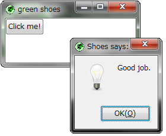
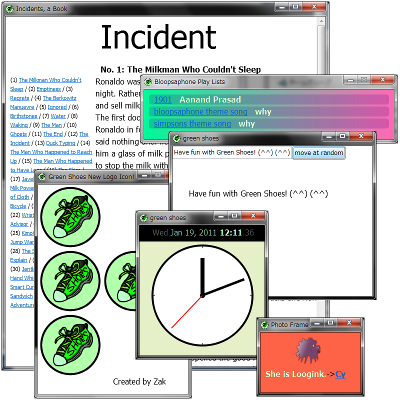

The Green Shoes Manual 1.0.322
Hello!
Shoesは軽量なグラフィックツールキットです。これは単純で分かりやすいです。 Shoesは簡単になるように生まれました。本当に、これは全くの初心者のために作られました。 本当に簡単です。 Green ShoesはカラフルなShoesの一つです。Ruby/GTK2を使ってRubyだけで書かれています。
このたった一行の取るに足りないShoesのプログラムを見てください：
Shoes.app{button("Click me!"){alert("Good job.")}}
ShoesプログラムはRubyと呼ばれる言語で書かれています。 ShoesがこのRubyコードの単純な行を渡されたとき、"Click me!"と中に書かれたボタンを持った ウィンドウを表示します。このボタンをクリックすると、メッセージがポップアップします。
Windows 7では、このように見えるでしょう: 
多くのShoesのアプリケーションがグラフィカルなゲームやアートのプログラムである一方、 テキストを配置したり編集したりすることも簡単にできます。 
そして、理想的には、Shoesプログラムは世の中のいくつかの有名なプラットフォームで実行できるでしょう。 マイクロソフトWindows、アップルのMac OS X、Linuxや多くの他のプラットフォームで。
Green Shoesのビルトインマニュアルへようこそ。このマニュアルはGreen Shoesのプログラムそのものです。
Next: Introducing Green Shoes